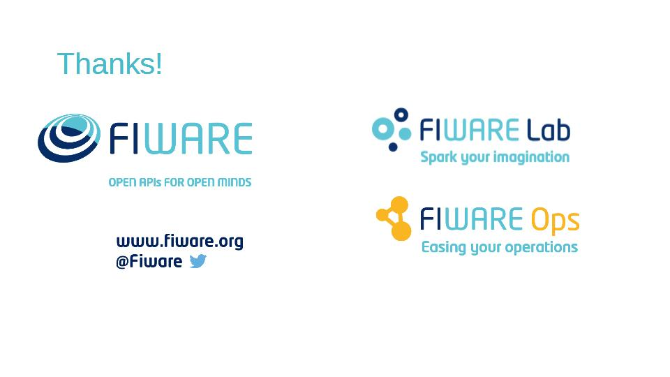

x
Parametric report with Knowage
1. Introduction
2. Introduction details
3. Definitions
4. LOV definition
5. A glance on LOV
6. Create a new LOV
7. Start a new LOV
8. Fill in the boxes
9. Insert query
10. Test LOV
11. Define meta-information
12. Save LOV
13. Analytical Driver definition
14. Start a new AD
15. Configure a new AD
16. Functional vs Temporal
17. Save the AD
18. Add Usemode
19. Add LOV to the AD
20. Select Modality
21. Grant permission
22. More about Usemode
23. Relate AD and document
24. Relate AD and document: step 1
25. Relate AD and document: step 2
26. Relate AD and document: step 3
27. Relate AD and document: step 4
28. Relate AD and document: step 5
29. Check the document
30. Thanks

1 / 30
Introduction